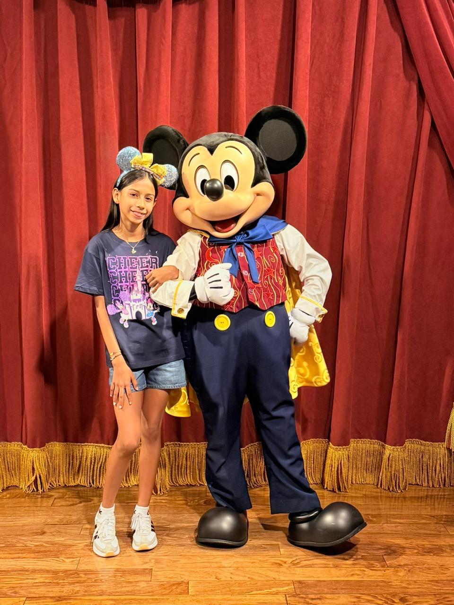

¡Estás invitad@!
a celebrar el cumpleaños de
Aquí va la foto de Valerie

Valerie
¡Cumplo 12 años!
Este año se pone más dulce que una cereza 🍒 y quiero que lo celebres conmigo.
FechaSábado 24 de octubre
Hora4:00 p.m.
LugarDiscoteca Suboficiales
Toca el botón y envíame un mensajito por WhatsApp 💌
¡Te espero!